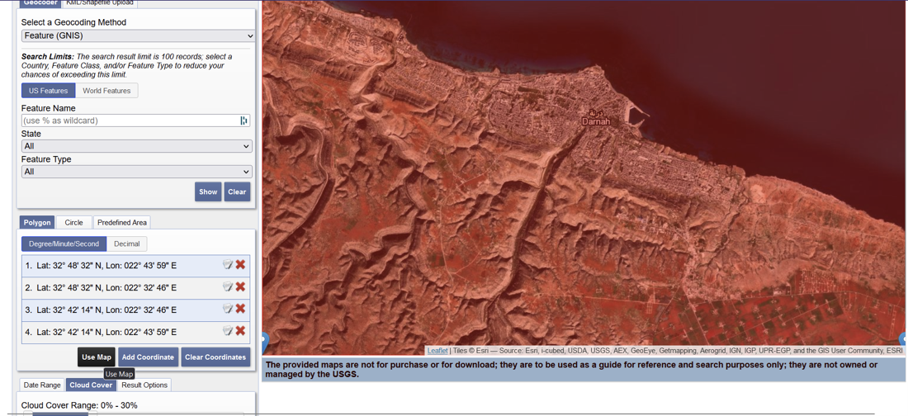
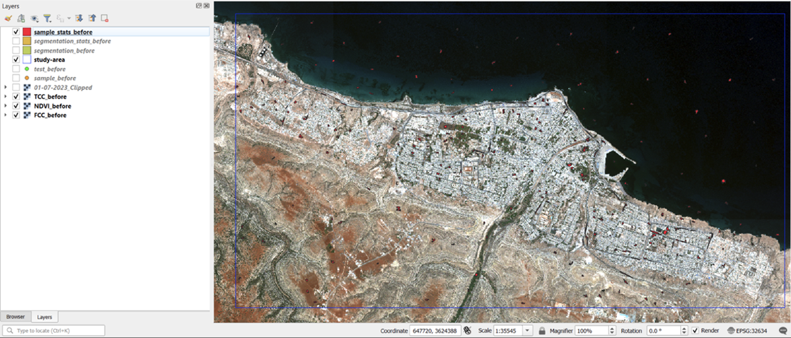
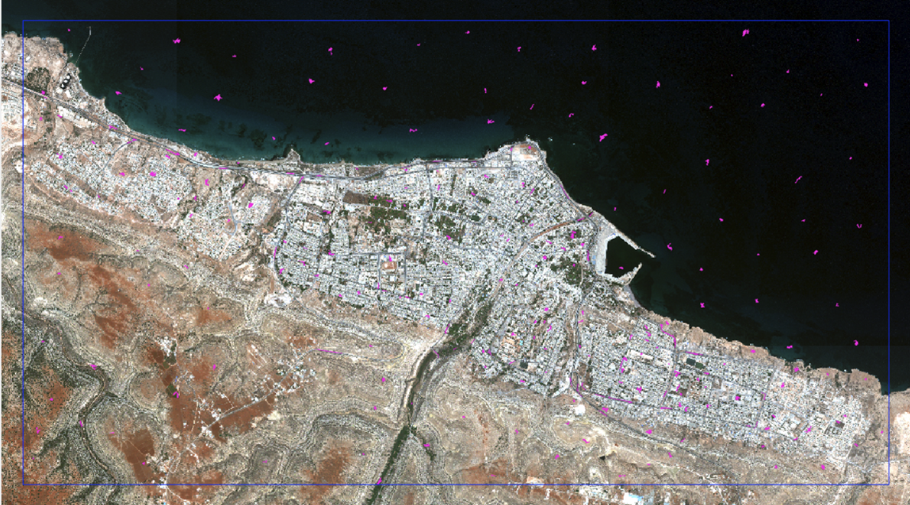
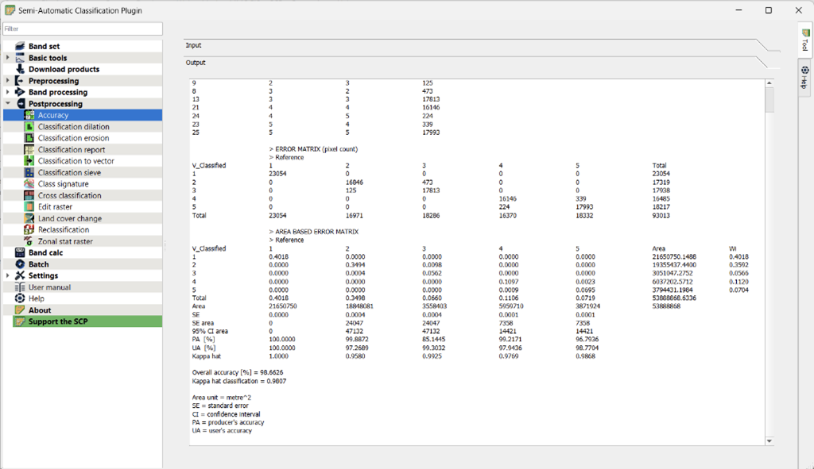
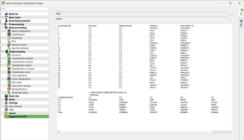

Methodology
3. Methodology

3.1 Data Collection
We will first need to create the following folders to store our data:
1. Create a folder called project.
2. Create a subfolder called GeoTiff in the project folder.
3. Create a subfolder called data in the project folder.
4. Create a subfolder called Geopackage in the project folder.
3.1.1 Collecting GeoEye-1 Images
We will now download the GeoEye-1 satellite images from MAXAR.
1. Create a new subfolder called GeoEye-1 under the GeoTiff folder.
2. Go to https://maxar.com/open-data/libya-floods-0923.
3. Search for the Quad Keys and download the following 6 data sets, once for pre-event and once for post-event:
120200213132
120200213123
120200213131
120200213121
120200213133
120200213130
Your screen should look similar to the following:
4. Create the following subfolders in the GeoEye-1 folder, and save your downloaded data into them respectively (pre-event and post-event):
01-07-202313-09-2023
3.1.2 Collecting Sentinel 2 Images
We will now download the Sentinel 2 satellite images from the Copernicus Open Access Hub.
1. Create a new subfolder called Sentinel under the GeoTiff folder.
2. Go to https://dataspace.copernicus.eu/browser/.
3. Login to your account and navigate the map to Derna.
4. Click on Search, select Sentinel-2 as the data source, and set the cloud cover percentage to 30%.
5. Scroll down and set the time range as follows. Once done, click on Search.
6. The search result appears, scroll through the list:
7. Download the following datasets by clicking on the download icon:
8. The downloading process can take up to 30 minutes. Once complete, create the following subfolders in the Sentinel folder, and transfer the downloaded data into the respective folder:
Sentinel-2A, 22/09/2023Sentinel-2B, 7/09/2023
3.1.3 Collecting Landsat 8-9 Images
We will now download Landsat 8 and 9 satellite images from the Earth Explorer.
Create a new subfolder called
Landsat 8/9under theGeoTifffolder.Login to your account and navigate to Derna on the map.
- Scroll down the tab and set the Date Range from 08/25/2023 to 09/19/2023.
- Scroll down the tab and set the cloud cover range to 30%.
- For coordinates, click on Use Map.

- Click on the Data Sets tab.
- Select the Landsat 8-9 OLI/TIRS C2 L1 data set:
- Click on the Results panel.
- Download the following data sets:

- Under the download options, select Download All Files.
- Create the following subfolders in the
Landsat 8/9folder, and save your downloaded data into them respectively:
Landsat 8 (25-08-2023)Landsat 9 (18-09-2023)
3.1.4 Collecting DEM Images
We will now download Digital Elevation Model from the Earth Explorer.
Create a new subfolder called
DEMunder theGeoTifffolder.Repeat the same steps as above, however, do not set the date range. Instead, select SRTM 1 ARC- Second Global as the dataset:
- Click on the Results panel and only one result is returned.
- Download the data set SRTM1N32E022V3 and move the contents into the
DEMsubfolder.
3.1.5 Collecting Derna Hexagon Shapefile
Derna_city_250m_hexagon comprises a collection of 250m hexagons defining the study area. It is in a ESRI shapefile format and is available in the GIS project folder of eLearn (SMU’s learning portal.)
Download the Derna Hexagon Shapefile provided in E-learn and save it into the folder called data.
3.1.6 Collecting the FAO Soil Map Data set
We will now download FAO/ UNESCO Soil Map of the World from FAO.
Create a subfolder named
Soilunder the folderdata.Go to https://data.apps.fao.org/map/catalog/srv/eng/catalog.search#/home.
- Under Search type “Digital Soil Map of the World”
Download the ESRI shapefile.
A new folder called
DSMWwill be added to the Downloads folder. Copy the contents over to theSoilfolder.
3.2 Data Wrangling
3.2.1 Processing Raster Layers
Before we can proceed with the SCP Classification, we must first process the raster layers obtained from the satellite imagery sources. This is a necessary step as variation exists in terms of the area covered by the raster layers. For example, the Landsat 8, Landsat 9, and Sentinel-2 raster layers encompass a large area which extends beyond the boundaries of Derna, our focal area. Conversely, the Maxar raster layers require merging to cover the entirety of Derna. Therefore, processing the raster layers is a crucial preliminary step as it sets the foundation for a reliable and targeted dataset essential for effective SCP classification of Derna.
3.2.1 Add Raster Layers
- From Layer > Add Layer > Add Raster Layer
Click on the icon.
Navigate to the
Sentinel-2B, 7/09/2023folder in your computer’s repository.From
Sentinel-2B, 7/09/2023 > GRANULE > L2A_T34SFB_A033967_20230907T091849 > IMG_DATA > 10m> SelectB02-B08_10m.jp2 layersand click on open.
- Click on the button to add the raster layers
The layers will be added into the Layers panel
3.2.2 Clip Raster Layers
- From Raster > Extraction > Clip Raster by Mask Layer
For Input Layer put
T34SFB_20230907T090559_B02_10mlayerFor Clipping extent select Calculate from Layer and put the
Derna_city_250m_hexagonlayer
Click Run
A new virtual layer called
Clipped (extent)will be added into the layers panel. Export it as a Geotiff under the name:T34SFB_07-09-2023_T090559_B02_10m. Create a new subfolder named07-09-2023 ClippedinGeoTiff > Sentinel. Create 3 other subfolders in07-09-2023 Clippedcalled10m,20m,60m, and save the corresponding band number to the respective folder.
- Repeat the process for the following Sentinel-2B raster layers:
T34SFB_20230907T090559_B03_10m
T34SFB_20230907T090559_B04_10m
T34SFB_20230907T090559_B08_10m
T34SFB_20230907T090559_B01_20m
T34SFB_20230907T090559_B05_20m
T34SFB_20230907T090559_B06_20m
T34SFB_20230907T090559_B07_20m
T34SFB_20230907T090559_B08A_20m
T34SFB_20230907T090559_B11_20m
T34SFB_20230907T090559_B12_20m
T34SFB_20230907T090559_B09_60m
Create a new subfolder under the
GeoTiff > Sentinelcalled22-09-2023 Clipped. Create 3 other subfolders in22-09-2023 Clippedcalled10m,20m,60m, and save the corresponding band number to the respective folder.Create two new subfolders under the
GeoTiff > Landsat 8/9calledLandsat 9 (18-09-2023) ClippedandLandsat 8 (25-08-2023), respectively.
- Repeat the steps in Sections 3.2.1 & 3.2.2 for the
Sentinel 2A, 22/09/2023,Landsat 9 (18-09-2023),Landsat 8 (25-08-2023)datasets, saving them into their respective “Clipped” folders.
3.2.3 Merge GeoEye-1 Raster Layers
Create two new subfolders under the
GeoTiff > Geoeyes-1called01-07-2023 Clippedand13-09-2023 Clipped, respectively.Add in all
01-07-2023raster layers by repeating the steps in Section 3.2.1
- From Raster > Miscellaneous > Merge

- For input layer select all the 01-07-2023 raster layers
Click on Run.
A new virtual layer called
Mergedwill be added into the layers panel. Export it as a GeoTiff named01-07-2023 Mergedand save it in the01-07-2023 Clippedfolder.
Repeat the steps in Section 3.2.3 for the 13-09-2023 raster layers. Save the new merged layer as 13-09-2023 Merged in the 13-09-2023 Clipped folder.
3.2.4 Clipping Study Area
To focus our analysis within the boundary of Derna, we will clip the merged raster of the GeoEye-1 images before moving on.
Following the steps taken in Section 3.2.2, clip the 01-07-2023 Merged and 13-09-2023 Merged layers and save these new layers as 01-07-2023 Clipped & 13-09-2023 Clipped into the 01-07-2023 Clipped & 13-09-2023 Clipped folders respectively.
Your clipped layers should look like the following:
4. Creating Composite Images
4.1 GeoEye-1 Composite Images
4.1.1 GeoEye-1 Natural Color Image
Natural Color Composite images illustrate the terrain based on how it looks like onboard the satellite platform looking down on the respective target size, which is Derna in this case.
- Right click on the
01-07-2023 MergedRaster > Properties
- From information > Symbology
- Select the following band combination and click OK
For Red band select Band 3
For Green band select Band 2
For Blue select Band 1
You will get the following image:
- Export the
01-07-2023 Mergedlayer as a Rendered Image calledNatural Color (3-2-1)and save it in the01-07-2023 Clippedfolder.
4.1.2 GeoEye-1 False Color Composite Image
False color composite image is commonly used for analyzing vegetation, monitoring soil and crops. Deep red indicates healthy and dense vegetation, while grassy or sparse/shrubby vegetation appears in lighter shades while urban areas are green-blue, and the soil color varies from dark to light brown.
Repeat the process in Section 4.1.1 but using the following band combination:
For Red band select Band 4
For Green band select Band 3
For Blue select Band 2
You will get the following image:
- Export the
01-07-2023 Mergedlayer as a Rendered Image calledFalse Color Composite (4-3-2)and save it in the01-07-2023 Clippedfolder.
4.1.3 GeoEye-1 Green Normalized Difference Vegetation Index (GNDVI)
The GNDVI is a vegetation index used to estimate photosynthetic activity, and is therefore helpful in understanding vegetation density and assessing changes in plant health (ArcGIS Pro, n.d.).
GNDVI is calculated as a ratio Near Infra-red (NIR) and Green (G) values as per the following equation:
GNDVI=((NIR - G))/((NIR +G))
Where:
Green – Band 2
NIR – Band 4
Click on the Processing Toolbox icon
- Search for “Raster Calculator” and open the tool
- For Expression input the following:
("01-07-2023 Merged@4"-"01-07-2023 Merged@2)/("01-07-2023 Merged@4"+"01-07-2023 Merged@2")
For Reference layers use
01-07-2023 Merged.Click Run
The following layer should be generated:
We will now adjust the symbology
- Right Click on GNDVI > Properties > Symbology > Singleband pseduocolor
- For Color ramp: Select Greens
- For mode set it to Equal Interval and set Classes to 4
You will get the following result:
- Export the
Outputlayer as a GeoTiff calledGNDVIand save it in the01-07-2023 Clippedfolder.
4.1.4 GeoEye-1 Renormalized Difference Vegetation Index (RDVI)
The RDVI is a vegetation index that assesses vegetation health. As floods can drastically affect soil conditions, this index is appropriate for use in our EDA as it is not affected by changes in soil conditions or the angle from which the vegetation is observed (NV5 Geospatial, n.d.), therefore making it more reliable for observing the effects of the flood on vegetation alone.
RDVI is calculated as a ratio of Near Infra-red (NIR) and Red (R) values as per the following equation:
RDVI=((NIR - R))/√((NIR + R))
Where:
Red – Band 3
NIR – Band 4
- Repeat the steps from Section 4.1.3 however under ‘Expression’ input:
("01-07-2023 Merged@4"-"01-07-2023 Merged@3")/(("01-07-2023 Merged@4"+"01-07-2023 Merged@3"))^0.5
- Adjust the Symbology according to the following:
Set Render type to Singleband pseudocolor
Color Ramp: Greens
Mode: Equal Interval
Classes: 4
You will get the following layer:
- Export the
Outputlayer as a GeoTiff calledRDVIand save it in the01-07-2023 Clippedfolder.
4.1.5 GeoEye-1 Ferric Iron, 3+
The roots of plants absorb Iron (Fe) from the soil as either ferrous (Fe2+) or ferric (Fe3+) ions. Fe is essential for healthy vegetation as it plays an essential role in photosynthesis, respiration, and nitrogen-fixation as nitrogen-fixing bacteria use it for enzymatic reactions (The Fertilizer Institute, n.d.).
Fe2+/Fe3+ deficiency can cause a variety of problems for vegetation such as stunted growth, wilting and reduced yields (The Fertilizer Institute, n.d.).
Fe3+ is calculated as a ratio of Red(R) and Green (G) values as per the following equation:
Fe3+=R/G
Where:
Red – Band 3
Green – Band 2
- Repeat the steps from Section 4.1.3 however under ‘Expression’ input:
("01-07-2023 Merged@3"/"01-07-2023 Merged@2")
- Adjust the Symbology according to the following:
Set Render type to Singleband pseudocolor
Color Ramp: Cividis
Mode: Equal Interval
Classes: 4
You will get the following layer:
- Export the
Outputlayer as a GeoTiff calledFerric Iron, Fe3+and save it in the01-07-2023 Clippedfolder.
Repeat the steps from Sections 4.1.1 – 4.1.4 for the 13-09-2023 Merged raster layer. Save the new merged layers as Natural Color (3-2-1), False Color Composite (4-3-2), GNDVI and RDVI in the 13-09-2023 Clipped folder.
- For GNDVI use the following expression:
("13-09-2023 Merged@4"-"13-09-2023 Merged@2)/("13-09-2023 Merged@4"+"13-09-2023 Merged@2")
- For RDVI use the following expression:
("13-09-2023 Merged@4"-"13-09-2023 Merged@3")/(("13-09-2023 Merged@4"+"13-09-2023 Merged@3"))^0.5
4.2 Sentinel-2 Composite Images
4.2.1 Natural Color (4-3-2)
- From SCP > Band set
- Select the
T34SFB_07-09-2023_T090559_B0_10mlayer and add it to the band set using the icon. Add the other bands in the following order:
T34SFB_07-09-2023_T090559_B02_10m
T34SFB_07-09-2023_T090559_B03_10m
T34SFB_07-09-2023_T090559_B04_10m
T34SFB_07-09-2023_T090559_B05_20m
T34SFB_07-09-2023_T090559_B06_20m
T34SFB_07-09-2023_T090559_B07_20m
T34SFB_07-09-2023_T090559_B08_10m
T34SFB_07-09-2023_T090559_B08A_20m
T34SFB_07-09-2023_T090559_B09_60m
T34SFB_07-09-2023_T090559_B11_20m
T34SFB_07-09-2023_T090559_B12_20m
You will get the following result:
- For Wavelength Quick settings select Sentinel-2 [bands 1,2,3,4,5,6,7,8,8A,9,11,12]
Click Run and close the SCP tab
Under RGB input: ‘4-3-2’ to get the natural color
You will get the following result:
- Export the
Virtual Band Set 1layer as a Rendered Image calledNatural Colors (4-3-2)and save it in a new subfolder underGeoTiff > Sentinelnamed07-09-2023 Sentinel 2 Images.
4.2.2 False Color Composite (8-4-3)
- Repeat the steps in Section 4.2.1 but set RGB to 8-4-3
You will get the following result:
- Export the
Virtual Band Set 1layer as a Rendered Image calledFalse Color Infrared (8-4-3)and save it in07-09-2023 Sentinel 2 Images.
4.2.3 Geology (12-11-2)
The geology band combination enhances the visualisation of geological features such as faults, lithology, and geological formations (GISGeography, 2023). Urban areas appear purple while areas with steep slopes appear dark yellow.
- Repeat the steps in Section 4.2.1 but set RGB to 12-11-2
You will get the following result:
- Export the
Virtual Band Set 1layer as a Rendered Image calledGeology (12-11-2)and save it in07-09-2023 Sentinel 2 Images.
4.2.4 Normalised Difference Vegetation Index (NDVI)
The NDVI quantifies vegetation by measuring the difference between near-infrared (NIR) which vegetation strongly reflects and Red light (R) which vegetation absorbs. The formula is as follows:
NDVI = ((NIR - R))/((NIR + R))
Where:
NIR – Band 5
Red – Band 4
- Open Raster Calculator
- Under ‘Expression’ input:
("T34SFB_07-09-2023_B05_20m@1" - "T34SFB_07-09-2023_T090559_B04_10m@1")/("T34SFB_07-09-2023_B05_20m@1" + "T34SFB_07-09-2023_T090559_B04_10m@1")
- Set Reference layer to
T34SFB_07-09-2023_B05_20m
- Click Run
- Adjust the Symbology according to the following:
Set Render type to Singleband pseudocolor
Color Ramp: Greens
Mode: Equal Interval
Classes: 4
You will get the following result:
- Export the
Outputlayer as a Rendered Image calledNDVIand save it in07-09-2023 Sentinel 2 Images.
4.2.5 Moisture Index
The moisture index uses the visible and Near Infrared (VNIR) and Short Wave Infrared (SWIR) to generate an index of moisture content. Wetter vegetation has higher values while lower values indicate that plants are under stress from insufficient moisture (GISGeography, 2023).
Moisture Index= ((VNIR - SWIR))/((VNIR + SWIR))
Where:
VNIR – Band 8A
SWIR – Band 11
- Open Raster Calculator
- Under ‘Expression’ input:
("T34SFB_07-09-2023_B08A_20m@1"-"T34SFB_07-09-2023_B11_20m@1")/("T34SFB_07-09-2023_B08A_20m@1"+"T34SFB_07-09-2023_B11_20m@1")
- Set Reference layer to
T34SFB_07-09-2023_B08A_20m
- Click Run
- Adjust the Symbology according to the following:
Set Render type to Singleband pseudocolor
Color Ramp: Blues
Mode: Equal Interval
Classes: 4
You will get the following result:
- Export the
Outputlayer as a Rendered Image calledMoisture Indexand save it in07-09-2023 Sentinel 2 Images.
Repeat the steps from Sections 4.2.1 – 4.2.5 for 22-09-2023 Clipped raster layers. Save the new layers as Natural Colors (4-3-2), False Color Composite (8-4-3), Geology (12-11-2), NDVI, Moisture Index in a new subfolder called 13-09-2023 Sentinel 2 Images under the Sentinel 2 folder.
- For
NDVIuse the following expression:
("13-09-2023 Merged@4"-"13-09-2023 Merged@2)/("13-09-2023 Merged@4"+"13-09-2023 Merged@2")
- For
Moisture Indexuse the following expression:
("T34SFB_2023-09-22-T090701_B05@1"-"T34SFB_2023-09-22-T090701_B04@1")/("T34SFB_2023-09-22-T090701_B05@1"+"T34SFB_2023-09-22-T090701_B04@1")
4.3 Landsat 8 & Landsat 9 Composite Images
4.3.1 Natural Color (4-3-2)
- From SCP > Band set
- Clear the existing band set using the
 icon
icon
According to the steps in Section 4.2.1, add the Landsat 8 (25-08-2023) raster layers in the following order to the Band Set:
LC08_L1TP_182037_2023-08-25_T1_B1
LC08_L1TP_182037_2023-08-25_T1_B2
LC08_L1TP_182037_2023-08-25_T1_B3
LC08_L1TP_182037_2023-08-25_T1_B4
LC08_L1TP_182037_2023-08-25_T1_B5
LC08_L1TP_182037_2023-08-25_T1_B6
LC08_L1TP_182037_2023-08-25_T1_B7
LC08_L1TP_182037_2023-08-25_T1_B8
LC08_L1TP_182037_2023-08-25_T1_B9
LC08_L1TP_182037_2023-08-25_T1_B10
LC08_L1TP_182037_2023-08-25_T1_B11
You should have the following result:
- Set Wavelength quick settings to Landsat 8 OLI [bands 1,2,3,4,5,6,7]
- Click Run and close the SCP tab
- Set RGB to ‘4-3-2’
You will get the following result:
Export the Virtual Band Set 1 layer as a Rendered Image called Natural Color (4-3-2) and save it in a new subfolder under GeoTiff > Landsat 8/9 named Landsat 8 (25-08-2023) - Images.
4.3.2 False Color Composite (5-4-3)
- Repeat the steps in Section 4.3.1 but set RGB to 5-4-3
You will get the following result:
- Export the
Virtual Band Set 1layer as a Rendered Image calledFalse Color Infrared (5-4-3)and save it inLandsat 8 (25-08-2023) - Images.
4.3.3 Geology (7-6-2)
- Repeat the steps in Section 4.3.1 but set RGB to 7-6-2
You will get the following result:
Export the Virtual Band Set 1 layer as a Rendered Image called Geology (7-6-2) and save it in Landsat 8 (25-08-2023) - Images.
4.3.4 Normalised Difference Vegetation Index (NDVI)
The NDVI quantifies vegetation by measuring the difference between short wave infrared (SWIR) near-infrared (NIR). The formula is as follows:
NDVI = ((SWIR - NIR))/((SWIR + NIR))
Where:
SWIR – Band 5
NIR – Band 4
- Open Raster Calculator
- Under ‘Expression’ input:
("LC08_L1TP_182037_2023-08-25_T1_B5@1" - "LC08_L1TP_182037_2023-08-25_T1_B4@1")/("LC08_L1TP_182037_2023-08-25_T1_B5@1" + "LC08_L1TP_182037_2023-08-25_T1_B4@1")
- Set Reference layer to
LC08_L1TP_182037_2023-08-25_T1_B5
- Click Run
- Adjust the Symbology according to the following:
Set Render type to Singleband pseudocolor
Color Ramp: Greens
Mode: Equal Interval
Classes: 4
You will get the following result:
- Export the
Outputlayer as a Rendered Image calledNDVIand save it inLandsat 8 (25-08-2023) - Images.
4.3.5 Moisture Index
The moisture index uses the visible and Short Wave Infrared (SWIR) and Thermal to generate an index of moisture content. Wetter vegetation has higher values while lower values indicate that plants are under stress from insufficient moisture (GISGeography, 2023).
Moisture Index = ((SWIR - Thermal))/((SWIR + Thermal))
Where:
SWIR – Band 5
Thermal – Band 6
- Open Raster Calculator
- Under ‘Expression’ input:
("T34SFB_2023-09-22-T090701_B05@1"-"T34SFB_2023-09-22-T090701_B06@1")/("T34SFB_2023-09-22-T090701_B05@1"+"T34SFB_2023-09-22-T090701_B06@1")Set Reference layer to LC08_L1TP_182037_2023-08-25_T1_B5
- Set Reference layer to
T34SFB_2023-09-22-T090701_B05
- Click Run
- Adjust the Symbology according to the following:
Set Render type to Singleband pseudocolor
Color Ramp: Blues
Mode: Equal Interval
Classes: 4
You will get the following result:
- Export the
Outputlayer as a Rendered Image calledMoisture Indexand save it inLandsat 8 (25-08-2023) - Images.
Repeat the steps from Sections 4.3.1 – 4.3.5 for Landsat 9 (18-09-2023) Clipped raster layers. Save the new layers as Natural Colors (4-3-2), False Color Composite (8-4-3), Geology (12-11-2), NDVI, Moisture Index in a new subfolder Landsat 9 (18-09-2023) Composite Images under the Landsat 8/9 folder.
- For
NDVIuse the following expression:
("LC09_L1TP_182037_2023-09-18_T1_B5@1"-"LC09_L1TP_182037_2023-09-18_T1_B4@1")/("LC09_L1TP_182037_2023-09-18_T1_B5@1"+"LC09_L1TP_182037_2023-09-18_T1_B4@1")
- For
Moisture Indexuse the following expression:
("LC09_L1TP_182037_2023-09-18_T1_B5@1" - "LC09_L1TP_182037_2023-09-18_T1_B6@1")/("LC09_L1TP_182037_2023-09-18_T1_B5@1" + "LC09_L1TP_182037_2023-09-18_T1_B6@1")
4.4 Soil Composition Analysis
4.4.1 Selecting Derna’s Soil Layer
- From Layer > Add Layer > Add Vector Layer
Click on the
 icon.
icon.Navigate to the
Soilfolder in your computer’s repository.From Soil > DSMW > Select
DSMW.shplayer and click on open.
- The DSMW vector layer will be added to the layers panel.
- Right click on the DSMW layer > Open Attribute Table
Click on the Select by Expression icon
Under Expression input the following:
COUNTRY = 'LIBYA'and click on “Select Features”.
The following area will be selected:
- Right click on the DSMW layer > Export > Save Selected Features As…
o Save it as a GeoPackage under the name Libya_Soil and set the CRS to EPSG:4326 – WGS 84
- Bring the
Derna_city_250m hexagonlayer to the top of the layers panel
As the Libya_Soil extends beyond the administrative boundaries of Derna, we will need to clip the Libya_Soil layer.
- From Vector > Geoprocessing Tools > Clip
- Input the following Parameters:
For Input Layer set
Libya_SoillayerFor Overlay Layer set
Derna_city_250m_hexagonlayerClick Run
The following layer will be generated:

- Export the
Clippedlayer as a GeoPackage calledDerna_Soil Classificationand save it in theSoilsubfolder in theGeoTifffolder.
4.4.2 Classifying Derna’s Soil Layer
- Open the Attribute Table of the
Derna_Soil Classificationlayer.
Based on the above, the FAOSOIL value is ‘I-Bv-Lc-2/3ab’.
- Navigate to the
DSMWfolder in your data repository and open the ‘readme.doc’
Using information provided in the ‘readme.doc’, we can determine Derna’s soil type:
I: Lithosol
Bv: Vertic Cambisols
Lc: Chromic Luvisols
2/3ab: dry soil that receives moisture for a short period of time.
The dominant soil type of Derna is Lithosols, while Vertic Cambisols and Chromic Luvisols are also present, but with less abundance.
5. Data Exploration of Composite Images
5.1 Composite Images
Prior to conducting the Land Use Land Cover Change (LULC) classification, it is vital that the composite images are examined to gain a better understanding of the land cover changes caused by the flood. This understanding will enable visual identification of errors without constantly needing to meticulously examine the quantifiable metrics.
5.1.1 Natural Color Images
The pre-flood images in Figure 7, demonstrate that Derna is a coastal city bisected by a river, the Wadi Derna River, comprising dense patches of vegetation and a mountainous terrain. However, the post-flood photos in Figure 7 illustrate a scene of utter chaos and destruction as despite the floodwaters notably receding, it is evident that they are carrying a substantial amount of mud and debris, discernible through the color of the water. In addition, tremendous damage has been caused to Derna’s essential infrastructure through the destruction of five major roads, a highway, and a port facility as depicted in Figure 8. In particular, the city center has been inundated with areas in close proximity to the Wadi Derna River appearing to have experienced the brunt of the devastation.
In addition, the visualisation of the damage is far easier to see in the GeoEye-1 imagery, followed by Sentinel-2 imagery, and lastly the Landsat 8/9 imagery. This can be attributed to GeoEye-1’s close proximity (1.84m) to the target site, resulting in a higher image resolution.
5.1.2 False Color Composite Images
The pre-flood images in Figures 9 and 10, depicts dense vegetation alongside the Wadi Derna river, with dense patches of farmlands scattered throughout the city of Derna. In addition, sparse variation can be observed throughout the city. However, the post-flood photos in Figures 9 and 10 illustrate a severe reduction of vegetation with a notable decrease in vegetation density alongside the Wadi Derna river with numerous plantations in the city being transformed into barren land after the flood.
5.1.3 Geology Images
The pre-flood geological features of Derna in Figure 11 depicts a dense concentration of geological structures located away from the urban area, which is located along the coastline. The mountainous terrain exhibits a variety of geological characteristics, which is illustrated by the varying intensity of the yellow color. The post-flood images exhibit a more well-defined geological structure, indicating that the flood may have exposed underlying formations through erosion enabled by natural processes such as chemical weathering1.
1Chemical weathering refers to the chemical decomposition of rocks in situ by natural agents at the earth’s surface which causes rocks to be weakened and land to be made more permeable, making it more susceptible to erosion.
5.1.4 Moisture Index Images
The pre-flood Moisture Index in Figure 12 exhibits a relatively high water uptake in areas of dense vegetation which reveals that these regions were well-hydrated prior to the flood. However, the post-flood imagery illustrates a slightly increased water uptake in these regions, which indicates that the flood further saturated these regions.
5.1.5 NDVI/GNDVI
The pre-flood GNDVI/NDVI illustrates good vegetation density and health. However, the post-flood GNDVI/NDVI indicates a severe reduction of vegetation, however, vegetation health remains mostly unchanged.
5.1.6 RDVI
The pre-flood RDVI in Figure 14 illustrates good vegetation health and dense vegetation is distributed across the city. However, the post-flood RDVI demonstrates a severe reduction in vegetation density and decline in vegetation health as illustrated by the white spots present. This indicates that the flood not only stripped away vegetation but also attributed towards reducing vegetation health.
Now that we have gained a better understanding of the land cover changes from Sections 5.1.1 – 5.1.6, we are now ready to proceed with the Land Cover Classification, as outlined in Section 5.2.
5.2 Land Cover Classification (GeoEye-1)
5.2.1 Land Cover Scheme
We will classify the land cover based on the following categories:
Waterbody: sea, coastal water
Bareland: Open land, rock
Vegetation: Farmland, Natural Vegetation
Built-up: Buildings, Residentials, Factories
Impervious Surface: Roads, Concrete
Cloud
Shadow
5.2.2 Selecting Training & Test Sets (Before Flood)
We will now create 2 sets of samples to be used to train and test our classification model. As the classification will require creating many ESRI shapefile files, we must ensure we practice good file management.
Create a folder called
LULC.Within
LULC, create a sub-folder calledshapefile.Inside
shapefilecreate 3 sub-folders calledbefore_flood,after_flood, andclassification.
Note: it is very important that our folders’ names do not contain any spaces; if you have any space in your folders’ names, replace it with an underscore.
- Return to QGIS. From Layer > Create Layer > select New Shapefile Layer…
- Fill in the details as follows:
Note: save the new file under shapefile > before_flood as sample_before.
Once done, click on OK and the new layer will be added to our project.
Select on the layer and click on toggle editing, then click on the tool called Add Point Feature:
We will now create a sample point on our map, referencing the multi-spectral composite layers before the flood, 01-07-2023 we created earlier, such as the False Color Composite.
- Click on the following red point on the map and fill in the details as follows:
This signifies that we have created a sample point at that location and given it a land cover class 1, referring to that of a waterbody in our land cover scheme.
- Repeat this step until we get a total of 50 sample points for each land cover class. Since there are no clouds and shadows present before the flood, we can skip them for now.
You should have a total of 250 sample points representing a total of 5 different land cover classes, as shown:
- Before we continue, repeat the steps to create another vector layer called
test_before, and create a total of 250 test points, while ensuring that our test points do not overlap with the sample points, as shown below (in green):
5.2.3 Image Segmentation (Before Flood)
Now, we will segment the image using a clustering algorithm called “mean shift” to automatically identify objects present in the image.
- Click on the processing toolbox, and open the function called “Segmentation”, and fill in the details as follows:

- Scroll down and ensure we check the checkbox “8-neighbor connectivity”.
- Select output file and save it as a shapefile
segmentation_before.shpunder the foldershapefile > before_flood.
- Leave all other options as their default values and click on run. This program might take a few minutes.
Once done, a the following vector layer will be added to the layers panel.
- Next, open the processing tool called ZonalStatistics, and fill in the details as follows:
- Ensure that you save the output file into the same folder, calling it
segmentation_stats_before.shp. Click on Run.
Once done, we get a new layer as shown below:
- Open the attribute table of this layer, and we observe 4 sets of statistics, calculated from the 4 bands present in our GeoEye-1 data.
- We will now use our sample set to select the segments (objects). Open the processing tool called Join attributes by location and fill in the details as follows:
- Specify the output file as a shapefile called
sample_stats_before.shpsaved under the foldershapefile> before_flood. Click on Run.
Once done, we get a layer as follows, note that the sample points we created before are now covered by small segments.

- Repeat this step with the test samples, using
test_beforeas the input file, and save the output astest_stats_before.shpunder the foldershapefile> before_flood. Click on Run.
You will get the following result:

5.2.4 Model Training (Before Flood)
We will now train the classification model.
- Open the tool called TrainVectorClassifier and fill in the details as shown:

Save the output file as
OBIA_model_before.modelunder the fileshapefile > classification.Once done, click on Run. We do not get a new layer output this time.
5.2.5 Classification (Before Flood)
- After that, open the tool called VectorClassifier and fill in the details as shown:
- Save the output file as
SVM_classification_output_before.shpunder the foldershapefiles > classification. Once done, click on Run.
The output file is not automatically added to our project this time.
- Navigate to the classification output file and import it into our project. We get a layer as shown below:
- Navigate to properties of this layer, and select the options as shown below:
Categorised by the predicted value, there will be 5 different classes representing the land cover types defined earlier.
- Click on Apply, and you should get something like this:
- Before continuing we must first dissolve the vector output so that all segments are grouped together by the land cover class. Select the vector tool and fill in the details as shown:
- Save the output file as a GeoPackage, and name it
SVM_classification_output_before_dissolved. Once done, click on Run.
We get a new layer as shown:
- Repeat the steps and adjust the properties of the layer to get the following results:
- Next, we will rasterize the layer. Open the tool Rasterize and fill in the details as shown:
- Save the output file as TIF file, under the folder
GeoEye-1 > 1-07-2023 ClippedasSVM_classification_before.tif. Click on Run.
You will get the following result:
- Repeat the above steps to manipulate the properties of this layer.
You will get the following result:
5.2.6 Accuracy Assessment (Before Flood)
Finally, we will use the Semi-Automatic Classification Plugin (SCP) tool to calculate the accuracy of the classification.
- From SCP > Postprocessing > select Accuracy, and fill in the details as shown:
- Click on Run. A dialog window pops up. Save the file as
SVM_classification_accuracy_before.tifunder the foldershapefile > classification.
Once done, the program takes a few seconds to run and gives us the following output.

The above result provides the area-based error matrix, as well as the overall accuracy and kappa hat value.
5.2.7 Repeat the steps for another classification (After Flood)
Repeat the processes in Sections 5.2.2 – 5.2.7, using the files from 13-09-2023 Clipped to classify the satellite image taken after the flood. Save the files into shapefile > after_flood and classification.
You will get the following results:
5.2.8 Land Cover Change Detection
Finally, we will use the SCP tool to create a raster layer highlighting the changes in land cover classes before and after the flood.
- From SCP > Postprocessing > select Land cover change
- Fill in the details as shown:
- Once ready, click on Run. Save the output file under
shapefile > classification, asSVM_LULC_change.tif. After a few seconds, the execution is complete, and we see a new raster layer added to our project:
- Adjust the properties of the new layer as shown:
- Click on Apply.
We have now highlighted the extent of damages of the flood caused to different land cover classes, as shown below:
5.3 Land Cover Classification (Sentinel-2)
5.3.1 Selecting Regions of Interest for Training (Before Flood)
In this section, we will be creating a few other files separately. For good file management,
Create a folder called
SCPin theLULCfolder.Next, create two sub-folders called
before_flood_sentinelandafter_flood_sentinelinside theSCPfolder.
We will now classify the Sentinel-2 satellite images using the SCP Plugin.
Ensure you have the following layers present in your project:
T34SFB_07-09-2023_T090559_B2_10mT34SFB_07-09-2023_T090559_B3_10mT34SFB_07-09-2023_T090559_B4_10mT34SFB_07-09-2023_T090559_B8_10m
- Open the SCP tool, and set these four bands into a new Band set, and set the wavelength quick settings as “Sentinel-2”, as shown below:
In this case, set the following four bands into Band set 1.
- Next, close the dialog window, and navigate to the SCP & Dock panel:
- Click on Training Input along the side of the panel, and click on the icon with a yellow circle to create a new training input:
- A dialog window pops up. Save the file as
train_before.scpunder the folderbefore_flood_sentinel, as shown:

Next, following our land cover scheme earlier, we will create a region of interest (ROI) representing the land cover of a waterbody.
- Fill in the MC Name and C Name, as shown below:
- Next, click on the following tool called Create a ROI polygon inside the SCP toolbar:
- We will create a polygon in the waterbody, as shown below:
- Once done, click on the following icon to save the ROI’s signature. This process will take a few seconds to execute.
- Next, a saved signature appears in our signature list.
- Repeat the previous steps for a total of 5 samples for each land cover class for a total of 5 different land cover classes, as shown in our land cover scheme. You should set the MC ID to each match the land cover class.
Waterbody will use 1 as the MCID, Bareland 2, Vegetation 3, and so on, as shown below:
Note that there are no clouds or shadows in the Sentinel-2 images. Therefore we will not include those classes.
Once complete, there will a total of 25 ROI, representing 5 different land cover classes, as shown below:
5.3.2 Maximum Likelihood Classification (Before Flood)
Next, we will be classifying our satellite image using the calculated signatures of the ROIs that we have created.
- From SCP > Band processing > select Classification
- Fill in the details as follows:
- Once done, click on Run and save the output file as
ML_before_floodunder the folderbefore_flood_sentinel. The process will take a few seconds to run.
- Once the process is complete, close the SCP window.
You will get the following result:
- Adjust the properties of this new layer using the methods used earlier, such that the result looks like the following:
Note: Maximum Likelihood gave us a more accurate result in this case, therefore it is preferred over the other methods.
5.3.3 Selecting Regions of Interest for Testing (Before Flood)
We will repeat the previous section and create a set of ROIs to test our classification using the same band set. In our case, we are using band set 1.
- Same as before, create a new file called
test_before.scpunder the folderbefore_flood_sentinel. - Create a total of 25 ROIs, representing the 5 land cover classes.
You will get the following result:
5.3.4 Accuracy Assessment (Before Flood)
Once we have completed our classification, we will now assess the accuracy to determine whether the classification is reliable and can be used to detect land cover change.
- From SCP > Postprocessing > select Accuracy, as shown:
- Fill in the details as follows:
- Once done, click on Run, and save your output file as
ML_accuracy_before_floodunder the folderbefore_flood_sentinelas shown below:
- Upon completion, the program will execute.
You will receive the following result:
Based on the result, we are able to see the area-based error matrix, as well as the overall accuracy and kappa hat value of the classification.
5.3.5 Maximum Likelihood Classification (After Flood)
Repeat the steps above to classify the Sentinel-2 satellite images taken after the flood.
Ensure you have the following layers in your project:
T34SFB_18-09-2023_T090559_B2_10mT34SFB_18-09-2023_T090559_B3_10mT34SFB_18-09-2023_T090559_B4_10mT34SFB_18-09-2023_T090559_B8_10m
- Next, add them into a new band set, for example, Band set 2.
- Create the ROIs for Train and Test, naming the files as
train_after.scpandtest_after.scprespectively, saving them into the folderafter_flood_sentinel. - Perform maximum likelihood classification, saving your file as
ML_after_floodunder the folderafter_flood_sentinel. - Assess the accuracy of the classification.
5.3.6 Land Cover Change Detection
Once the two classifications are ready, we will use the SCP tool to determine the changes before and after the flood.
- Select the Land cover change tool of the SCP plugin (as shown in previous sections) and fill in the details as shown:
- Click on Run and save the output as
ML_LULC_sentinelunder the folderSCP. The output is shown as follows, with a new layer added to our project:

- Same as what we did before during the classification of GeoEye-1 images, adjust the properties of the new layer such that it appears as follows:
5.4 Land Cover Classification (Landsat 8/9)
Repeat the steps in Section 5.3 for the classification of the Landsat 8/9 satellite images before and after the flood.
Create 2 new sub-folders called
before_flood_landsatandafter_flood_landsatunder the folderSCP.Ensure that you have the following layers in your project:
LC08_L1TP_182037_2023-08-25_T1_B1
LC08_L1TP_182037_2023-08-25_T1_B2
LC08_L1TP_182037_2023-08-25_T1_B3
LC08_L1TP_182037_2023-08-25_T1_B4
LC08_L1TP_182037_2023-08-25_T1_B5
LC08_L1TP_182037_2023-08-25_T1_B6
Next, add the layers into a new band set, such as Band set 3.
Create the ROIs for Train and Test, naming the files as
train_before.scpandtest_before.scprespectively, saving them into the folderbefore_flood_landsat.Perform random forest classification, saving your file as
RF_before_floodunder the folderbefore_flood_landsat.
Note: As Random Forest provided a more accurate result for this scenario, it is preferred over the other methods.
- Assess the accuracy of the classification.
Once the classification for the Landsat 8 images before the flood is complete, repeat the steps for the classification for the Landsat 9 images after the flood, using the following layers:
LC09_L1TP_182037_2023-09-18_T1_B1
LC09_L1TP_182037_2023-09-18_T1_B2
LC09_L1TP_182037_2023-09-18_T1_B3
LC09_L1TP_182037_2023-09-18_T1_B4
LC09_L1TP_182037_2023-09-18_T1_B5
LC09_L1TP_182037_2023-09-18_T1_B6
The results of the classification are shown below:
As the resolution of the Landsat 8/9 satellite images are too coarse to clearly identify some land covers such as the roads (Impervious Surface), which are narrow and long, it indicates that classifications using Landsat 8/9 satellite images are not as useful as other satellite imagery to detect land cover changes. Therefore, we will be omitting the Landsat 8/9 satellite images from our final analysis.